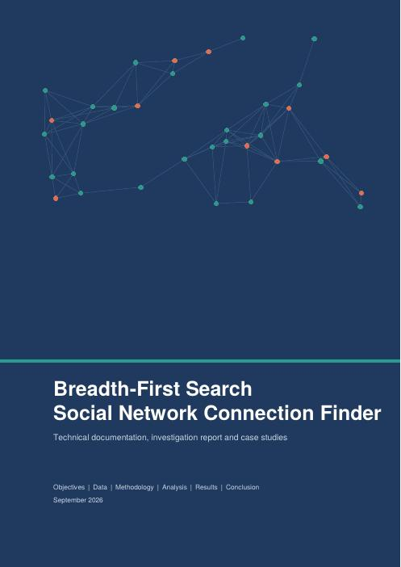
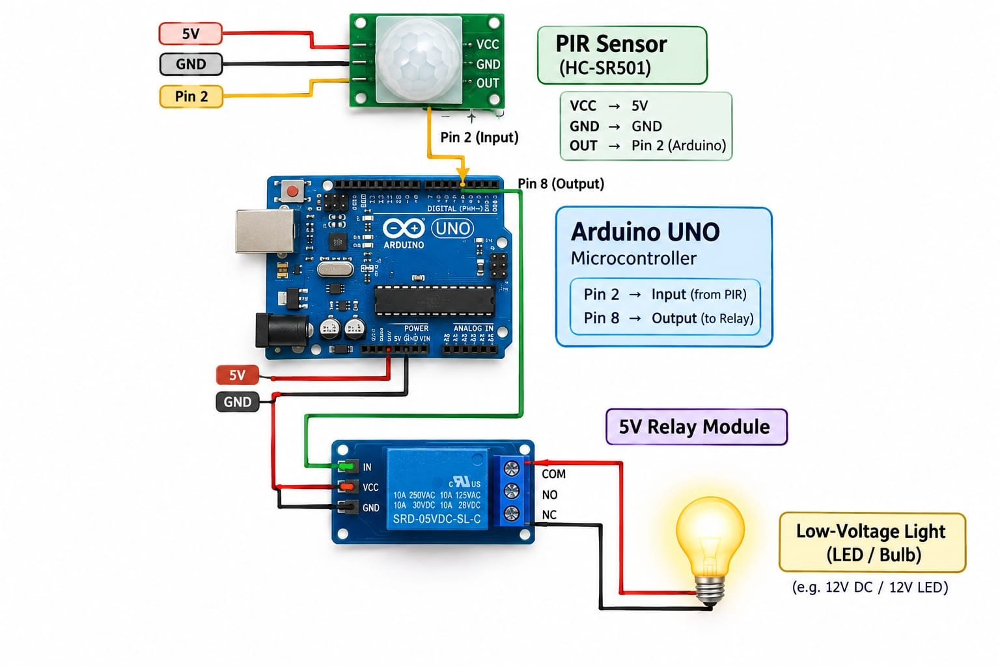

Data analysis in Excel
Used in the cricket performance workbook: 96 raw records cleaned, scored and summarised in six pivot tables.
Hi, I'm
I turn raw data and loose wires into things that work.
Computer science student at Sandip University, Nashik. I clean and analyse data in Excel, test graph algorithms in Python, and wire up Arduino circuits. Everything below is work I actually built.
I'm a computer science student who likes finding out how things behave. Give me a spreadsheet of 96 cricket records and I'll clean it, summarise it and build a dashboard. Give me a graph and I'll time how fast a search crosses it. Give me a PIR sensor and a relay and I'll make a lamp that switches itself on.
I work best in small teams. My Arduino mini project was built with three classmates, and my eSports club team earned a certificate of appreciation from the university.
I'm looking for internships where I can keep learning data analysis, software development and embedded systems while shipping something useful.
Grouped by what I've used them for, so each skill points to real work.
Used in the cricket performance workbook: 96 raw records cleaned, scored and summarised in six pivot tables.
Python for the BFS experiments, Arduino C++ for the room light, JavaScript for this site and its live dashboard.
Measured O(V + E) growth on networks up to 100,000 users.
Built an automatic room light that reacts to movement.
This site is versioned on GitHub and deployed on Vercel.
Four projects. Filter by type, or open the files behind each one.
An Excel analytics workbook covering 32 players, 7 countries and 3 formats. Raw data is cleaned (stray spaces trimmed), scored with a Performance Score, summarised in six pivot tables and presented on a dashboard with dropdown filters. I rebuilt it as a live dashboard on this site.

Finds the shortest chain of friendships between two users. Tested on synthetic networks: average path 3.643 hops in a 10,000-user scale-free network, 81.28 ms for a full traversal of 100,000 users, and bidirectional BFS expanding 99.6% fewer nodes than standard BFS. Includes case studies and a simulated investigation report.

A team mini project: a PIR sensor detects movement, an Arduino UNO reads it on pin 2 and switches a relay on pin 8, which turns the light on and off. Estimated cost for the prototype is ₹840 to ₹1,620. Built with Hemant Ravate, Vaishnavi Gangaputra and Sayli Bawse.
A responsive, hand-written site with a sidebar layout, light and dark themes, a filterable project list, a live data dashboard, a certificate gallery and a clickable BFS network in the hero. Source is on GitHub and it deploys from there to Vercel.
My Excel workbook, made live. It reads the same 96 cleaned records. Change a filter and everything recalculates, just like the dropdowns on the Excel dashboard sheet.
| Player | Country | Role | Format | Matches | Runs | Bat avg | Strike rate | Wickets | Catches | Score |
|---|
Click a column heading to sort.
These are the six insights written on the Insights sheet of the workbook.
Select a certificate to view it full size.
Recognised with a Certificate of Appreciation for contributions, dedication and commitment to the club and its competitive community.
Won the technical charades event, judged on intelligence, teamwork, creativity and quick thinking.
Designed, wired and documented an Arduino and PIR sensor system, from block diagram to cost estimate.
I haven't done an internship yet, so I'm building real projects to show what I can do. If you have an opening, I'd like to hear from you.
The quickest way to reach me is email. I also reply on LinkedIn.